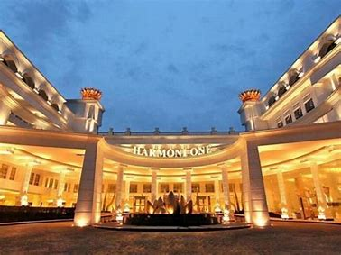
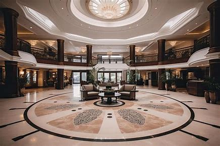
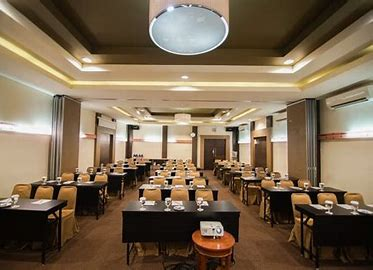

Menghadirkan Kenyamanan dan Kemewahan Sejak 2005
Hotel Harmoni One adalah pilihan sempurna bagi pelancong bisnis dan wisatawan yang mencari kenyamanan, kemewahan, dan layanan terbaik di tengah kota. Berdiri sejak tahun 2005, kami menawarkan lebih dari sekadar tempat menginap kami menyediakan pengalaman mengesankan bagi setiap tamu.
Dengan arsitektur elegan, fasilitas modern, dan staf profesional yang ramah, kami berkomitmen untuk menjadikan setiap kunjungan Anda tak terlupakan. Sebagai surga bagi pelancong bisnis dan wisatawan rekreasi, Harmoni One menawarkan total 292 kamar hotel dan 211 apartemen layanan (akan segera dibuka) yang dirancang dengan keanggunan yang halus dan pesona klasik. Dilengkapi dengan 24 ruang pertemuan kelas satu dan 3 ballroom dengan berbagai kapasitas.
Dapatkan Kamar Dengan Fasilitas Dan Fitur Terbaik Di Indonesia

Harmoni One Convention Hotel & Service Apartments adalah hotel MICE (Meetings, Incentives, Conferences and Exhibitions) yang terletak di Batam Centre, Pulau Batam, Indonesia. Sebagai properti terkemuka di jantung Batam Centre, Harmoni One dikelilingi oleh gedung-gedung industri utama dan kantor-kantor pemerintah daerah, serta dekat dengan Terminal Feri Batam Centre dan Pusat Perbelanjaan Mega Mall.
Dengan arsitektur elegan, fasilitas modern, dan staf profesional yang ramah, kami berkomitmen untuk menjadikan setiap kunjungan Anda tak terlupakan.

